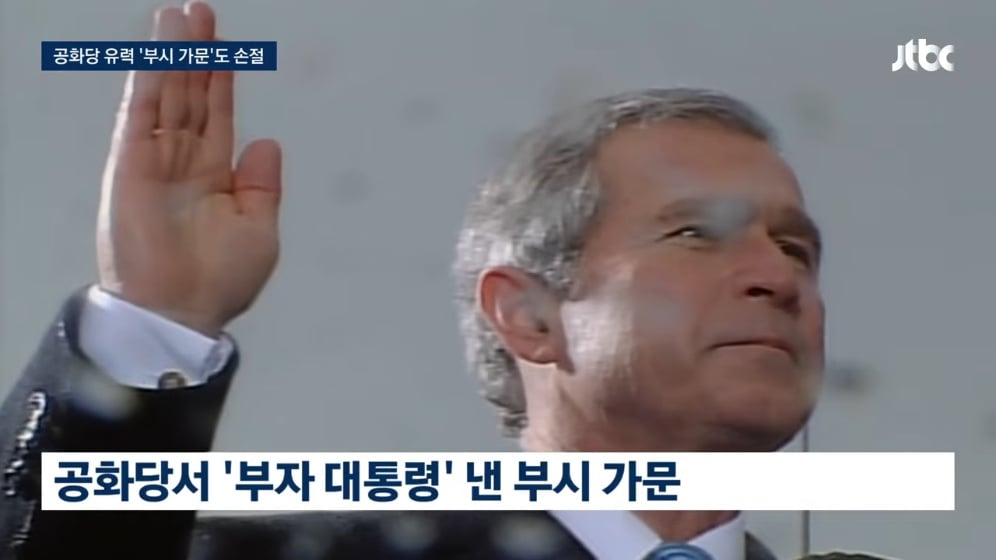
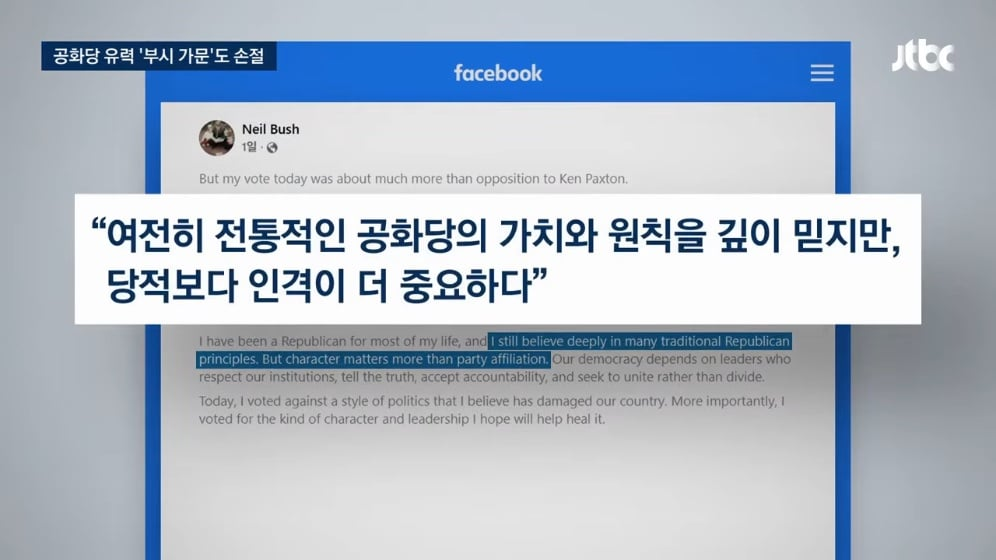
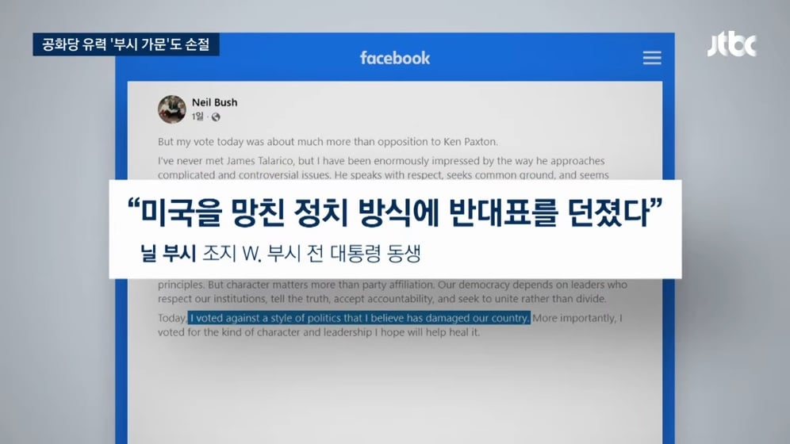
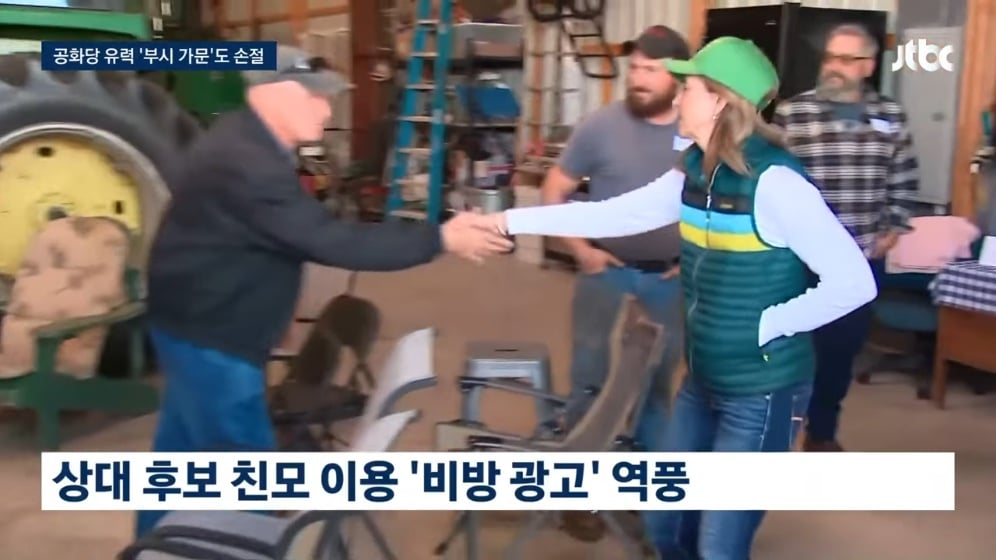
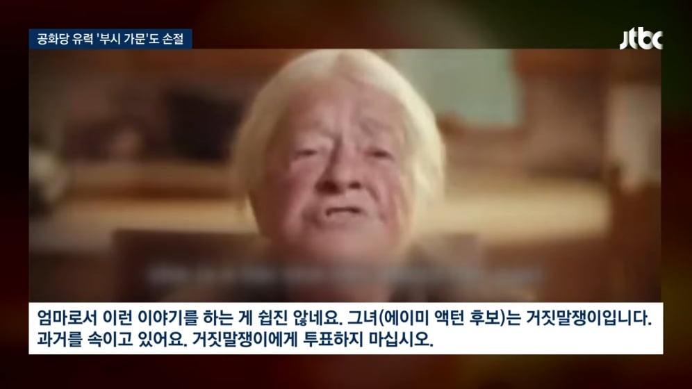
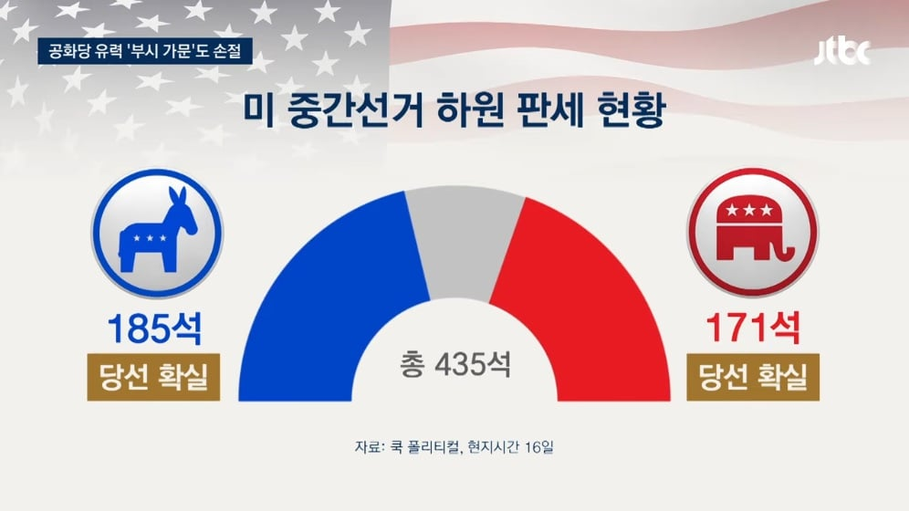
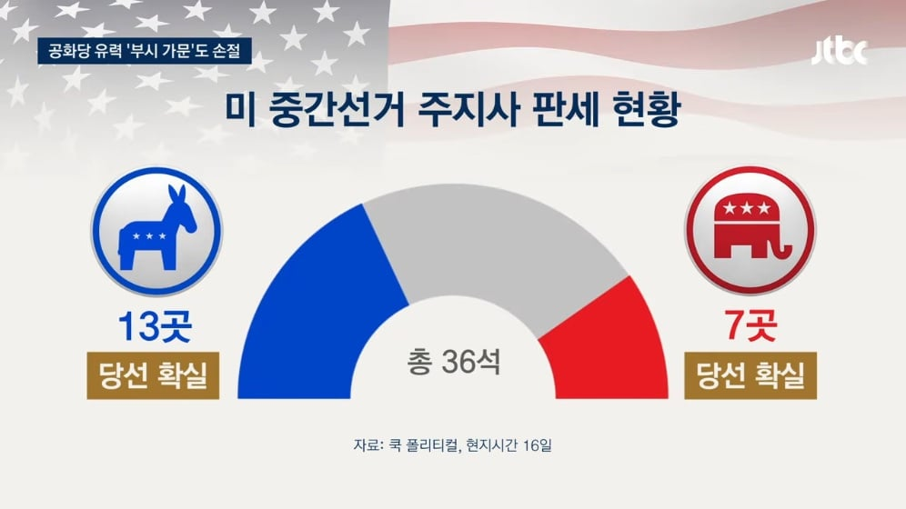

애초에 부시 일가는 트럼프 싫어했음. 큰 부시, 작은 부시, 바바라 부시(큰 부시 배우자) 등등 일가 전체가 트럼프 싫어함.
웬 근본도 없는 새끼가 기어들어와선 당을 작살을 내놓으니
그래도 여태까지는 같은 공화당이니까 참았는데 이젠 ㅅㅂ 안되겠다 싶었나보네
지성인이 트럼프 좋아하면 그게 병신이지

이라크 전쟁은 다국적파병이라도 끌어냈지 ㅋㅋㅋ
적어도 아들부시까진 전쟁할때 주작쳐서라도 명분은 만들고 친다 라는 규칙을 지켰음 ㅋㅋㅋㅋ 막말로 호르무즈에서 호위함 하나라도 자폭시키고 하던가 뭐 그냥 쳐 박고 징징대니 ㅋㅋㅋ
근데 그건 아들 부시가 자기 힘으로 이끌어냈다기보다는 그게 당시 미국이 누대에 걸쳐 쌓은 힘이었고 그걸 부시가 무리해서라도 이용한 거라고 봐야지. 그리고 부시가 날려먹었고.
저런 천박한 졸부집안을 정치가 집안이 좋아할리가 없잖아
졸부라서 천박한게 아니라 진짜로 하는 언행과 언행에서 보이는 행동양식? 인격? 이런게 바이칼호보다 투명하게 보여서 천박한거지
아무리 정치판이 좌우좌우 세상 둘중 하나인것처럼 선동질하는 싸구려 판이라해도
싼마이 언행의 상식선의 저점이 있는데 그걸 완전히 폭파시킨게 저놈임
미국 대통령으로는 정말 다시보기 어려울 수준이지. 카다피, 피노체트, 김정은, 시진핑, 푸틴, 차우세스쿠, 이디 아민, 폴 포트, 무가베 이런 새끼들하고 하등 다를바 없음.
만약에 학살도 할수 있으면 얼마든지 했을 새끼고 저치들 수준으로 저급하고 천박함
저런새끼들보다 더한거같어..ㅋㅋ
똥이 똥에게
존경하는 국민 여러분, 저는 대통령으로서 피를 토하는 심정으로
중간에 나온 아줌마 사진은 민주당 오하이오 주지사 후보인 에이미 액턴의 엄마가 자기 딸을 욕하는 영상임
상대 측 캠프에서 한평생 연을 끊고 살던 액턴 후보의 엄마를 어떻게 섭외해서 찍었다고 함
그런데 에이미 액턴이 12살 때 계부한테 성폭행을 당하고 부모와 의절했다는 사실이 알려짐
공화당 내에서도 비열하다고 욕 처먹음..
설명추
오히려 동정표 얻겠네
와 시발ㅋㅋㅋ
어질어질해 ㅋㅋㅋㅋ
이란만 안건드렸어도 솔직히 중간선거 절대 질수가 없었음 ㅋㅋ 븅신짓 제대로 한거지
근데 하원 민주당이 먹으면 선거 끝난 뒤에는 트럼프 막을수있는건 맞아?
마가는 기존 티파티나 네오콘도 싫어하지 않던가? 효과가 있을까...
니들이 선택한 공화당 대통령이다 악으로 깡으로 버텨라
공화당이나 민주당이나 기본 가치 자체는 이상적이지. 극으로 가서 그렇지 둘다
양당제가 존나 오래되다보니 저 확실지역에서 경선뚫고 후보되는게 당선이고 경선 뚫으려면 지지자들에게 색을 확실히 보여야하니 좌는 더 좌클릭 우는 더 우클릭 할수밖에없으니 시간이 지날수록 구조적으로 점점 극단으로 더 가버린다더라
양당제니 새로운걸 만들수도 없고 골치아프네
양당제가 법으로 규정된건 아닌데
선거인단독식제 << 이새끼가 있는한 양당제는 필연이라 연방제로 구성된 미국은 건국부터 필연적으로 양당제로 갈수밖에 없었음
직접선거면 쟤네도 존나 버라이어티한 다당제 국가였을수도
하긴...애초에 50개국이 모여있는 형태니...
네오콘이 선녀로보이네ㅋㅋ
다음 공화당 주도권은 네오콘이 잡는게 우리에겐 좋긴하지
부시, 볼턴, 딕체니가 합리적인 인물들로 보일지경임
트럼프가 그렇게 ㅆㅊ을 내놨는데 스코어가 저정도면 도대체....
별차이없네